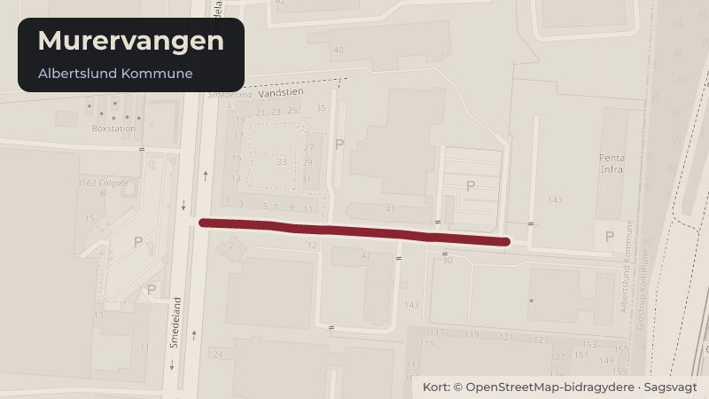

Besluttet 29. september, Økonomiudvalget, Albertslund
Miljøgodkendelse af Penta Infra ApS på Murervangen 143

Kort fortalt
- Forslaget
- Miljøgodkendelse af Penta Infra ApS godkendes.
- Hvem
- Økonomiudvalget, Albertslund Kommune
- Hvornår
- Tirsdag 29. september 2026
- Status
- Besluttet. x Supplerende sagsfremstilling Tiltrådte indstillingen.Beslutningen er forkortet her. Læs hele beslutningen
Er noget forkert her? Skriv til os
Læs hele sagen Kommunens egen tekst
Indstilling
x
x
Direktøren for By, Kultur & Miljø indstiller,
1. at miljøgodkendelse af Penta Infra ApS godkendes.
Baggrund
Den politiske beslutning i denne sag vedrører miljøgodkendelse af en allerede eksisterende
virksomhed. Der har været datacenter på ejendommen Murervangen 143 siden 2003
(kortbilag). Virksomheden Penta Infra ApS overtog datacenteret i 2021 og har siden drevet
virksomheden. I 2022 fremsatte virksomheden ønske om at udvide aktiviteterne, og der blev
indgået en aftale med Albertslund Forsyning om køb af overskudsvarme fra udvidelsen. Aftalen
blev godkendt af Kommunalbestyrelsen den 28. juni 2022.
Beslutningen om at placere et datacenter på ejendommen er således truffet gennem tidligere
kommunale beslutninger, herunder beslutningen om at udnytte overskudsvarmen til
fjernvarmeformål. Denne sag vedrører alene den miljøretlige regulering af en eksisterende
virksomhed, hvis samlede aktiviteter nu udløser krav om miljøgodkendelse. Efter
delegationsplanen skal miljøgodkendelsen godkendes af Kommunalbestyrelsen.
Virksomheden kan ikke sidestilles med de meget store hyperscale-datacentre, som ofte
forbindes med kunstig intelligens og globale cloud-tjenester. Aktiviteten består primært af
datalagring og serverhosting for kunder. Forvaltningen har derfor vurderet sagen ud fra de
konkrete lokale forhold og ikke ud fra generelle problemstillinger, der knytter sig til etablering af
nye, meget store datacentre.
Penta Infra ApS har siden 2022 arbejdet med forberedelsen af udvidelsen i dialog med
forvaltningen. Det eksisterende datacenter benævnes CPH01, og virksomheden ønsker nu at
udvide med datacenter CPH02. Udvidelsen sker inden for den eksisterende ejendom og kan
realiseres inden for rammerne af den gældende Byplanvedtægt 5. Projektet kræver derfor ikke
ændringer af plangrundlaget, og byggesagen behandles administrativt i overensstemmelse
med delegationsplanen. Udvidelsen planlægges desuden gennemført, så driften af det
eksisterende datacenter CPH01 kan fortsætte under byggeperioden.
Hvorfor kræves der en miljøgodkendelse?
Datacenteraktivitet udløser ikke krav om miljøgodkendelse, da det ikke er omfattet af
bekendtgørelsen om miljøgodkendelsers liste over godkendelsespligtige aktiviteter. Det
eksisterende nødstrømsanlæg ved CPH01 ligger desuden under grænsen for
miljøgodkendelse og reguleres derfor efter bekendtgørelsen om mellemstore fyringsanlæg
(MCP-bekendtgørelsen).
Udvidelsen med CPH02 ville heller ikke isoleret set udløse krav om miljøgodkendelse. Kravet
opstår, fordi miljømyndigheden skal vurdere virksomhedens samlede aktiviteter på
ejendommen. Når nødstrømsanlæggene ved CPH01 og CPH02 vurderes samlet, overstiger
den installerede effekt 50 MW. Virksomheden bliver derfor omfattet af
godkendelsesbekendtgørelsens bilag 1, punkt 1.1 b. Hvis den samlede effekt havde været
under 50 MW, ville virksomheden fortsat alene være omfattet af reglerne om mellemstore
fyringsanlæg.
Betydningen af to separate anlæg
CPH01 og CPH02 etableres som to teknisk adskilte datacenteranlæg med hver deres
installationer og nødstrømsanlæg. Efter miljølovgivningen skal miljømyndigheden imidlertid
vurdere de samlede aktiviteter på samme lokalitet, når anlæggene drives som én virksomhed.
Det betyder, at anlæggene i miljøretlig forstand behandles samlet, selv om de fysisk og
driftsmæssigt består af to separate enheder.
Den samlede vurdering indebærer, at effekten fra nødstrømsanlæggene lægges sammen ved
vurderingen af, om virksomheden er omfattet af miljøgodkendelsespligt. Det er således ikke
det enkelte anlæg isoleret set, men den samlede miljøpåvirkning fra virksomhedens aktiviteter
på ejendommen, der danner grundlag for myndighedens afgørelse. Forvaltningen vurderer
derfor og regulerer anlæggene som én samlet virksomhed i miljøgodkendelsen.
Forvaltningen vurderer, at miljøgodkendelsespligten giver en mere samlet og hensigtsmæssig
regulering af virksomheden. Miljøgodkendelsen giver miljømyndigheden mulighed for at
foretage en samlet vurdering af virksomhedens påvirkning af omgivelserne og fastsætte
konkrete, lokalt tilpassede vilkår for blandt andet støj, luftforurening samt drift og test af
nødstrømsanlæggene. Godkendelsen skaber dermed et klart reguleringsgrundlag, som både
understøtter virksomhedens drift og beskytter naboer og omgivelser mod væsentlige
miljøpåvirkninger.
Indholdet i miljøgodkendelsen
Med denne sag fremlægges et udkast til miljøgodkendelse med vilkår for driften af den
samlede virksomhed, herunder både datacentrene og nødstrømsanlæggene (bilag).
Vilkårene sikrer, at virksomheden kan etablere udvidelsen og samtidig overholde de
miljømæssige krav i forhold til de omkringliggende ejendomme. De omfatter blandt andet
grænser for støj, krav til håndtering af olie og kemikalier samt regler for drift og afprøvning af
nødstrømsanlæggene.
Miljøgodkendelsen fungerer både som virksomhedens retsgrundlag for driften og som
miljømyndighedens grundlag for tilsyn, håndhævelse og behandling af eventuelle klager.
Hvis miljøgodkendelsen ikke meddeles
Hvis miljøgodkendelsen ikke meddeles, vil virksomheden ikke kunne gennemføre den ansøgte
udvidelse af datacenteret. De planlagte investeringer vil dermed ikke kunne realiseres, og de
forventede arbejdspladser samt afledte erhvervsaktiviteter vil ikke blive etableret.
Virksomheden vil fortsat kunne drive det eksisterende datacenter lovligt, men ikke gennemføre
den ansøgte udvidelse. Samtidig vil kommunen ikke få det samlede reguleringsgrundlag for
virksomhedens fremtidige miljøpåvirkning, som miljøgodkendelsen ellers skaber.
Virksomheden vil i den situation kunne vælge at indsende et revideret projekt eller påklage
afgørelsen i det omfang, lovgivningen giver mulighed herfor.
Det er væsentligt at bemærke, at projektet gennem længere tid er udviklet med henblik på at
kunne opfylde de miljøkrav og vilkår, som fremgår af udkastet til miljøgodkendelse.
Virksomheden har løbende tilpasset projektet for at imødekomme både miljømæssige og
arkitektoniske hensyn, herunder krav, der følger af miljølovgivningen og af placeringen i
byudviklingsområdet Hersted.
Bygningen er blandt andet planlagt med begrønning og andre afskærmende elementer, der
skal begrænse den visuelle påvirkning af omgivelserne. Datacenteret vil fremstå som en
relativt lav bygning med skorstene, og bebyggelsesprocenten vil være væsentligt lavere end på
de omkringliggende naboejendomme.
Et afslag kan medføre, at virksomheden gør indsigelse mod afgørelsen eller søger
spørgsmålet prøvet ved relevante klage- eller retsinstanser, herunder med eventuelle
erstatningskrav. Derudover kan et afslag få betydning for virksomhedens vurdering af
mulighederne for fremtidige investeringer på lokaliteten.
Kommunens vision og politikker
Datacentrene vil bidrage positivt til varmeproduktionen og dermed understøtte Albertslund
Kommunes Klimaplan 2050, hvor det er en målsætning at fremme udnyttelse af
overskudsvarme i samarbejde med virksomheder.
Økonomi
Intet at bemærke.
Lovgrundlag
Miljøgodkendelsen meddeles efter miljøbeskyttelseslovens §33 LBK nr. 1742 af 22/12/2025.
Godkendelsesbekendtgørelsen LBK nr. 1027 af 02/09/2024.
Bekendtgørelsen om miljøkrav for mellemstore fyringsanlæg Bek nr. 1408 af 27/11/2023.
Borgerperspektiv
Med miljøgodkendelsen af udvidelsen af datacenteret sikres borgerne og det omgivende miljø,
at virksomheden kan etableres og drives uden væsentlige miljømæssige gener.
Historik
Beslutning fra Miljø-, Natur- og Byudvalget, den 22. september 2026, punkt 1:
Tiltrådte indstillingen.
Beslutning fra Miljø-, Natur- og Byudvalget, den 22. september 2026, punkt 1:
Tiltrådte indstillingen.
Laura, der er i politisk mesterlærer, deltog under punktet.
Beslutning
x
Supplerende
sagsfremstilling
Tiltrådte indstillingen.
Vivi Nør Jacobsen (F) deltog ikke under punktet.
Kilde: Albertslund Kommune, Økonomiudvalget, referat fra mødet tirsdag 29. september 2026, punkt 20. Læs den originale sag hos kommunen.
Steder i sagen: Murervangen